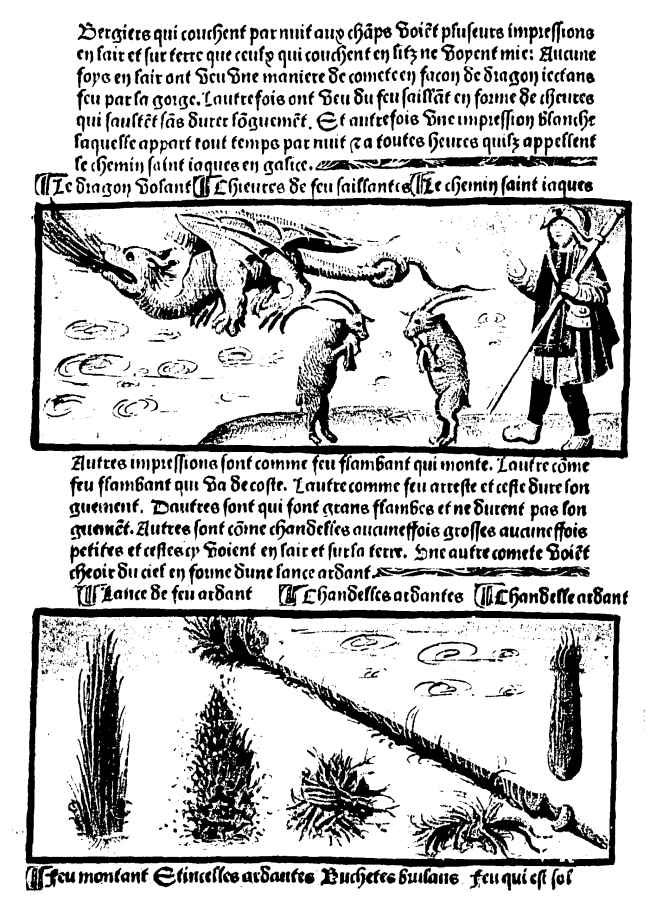
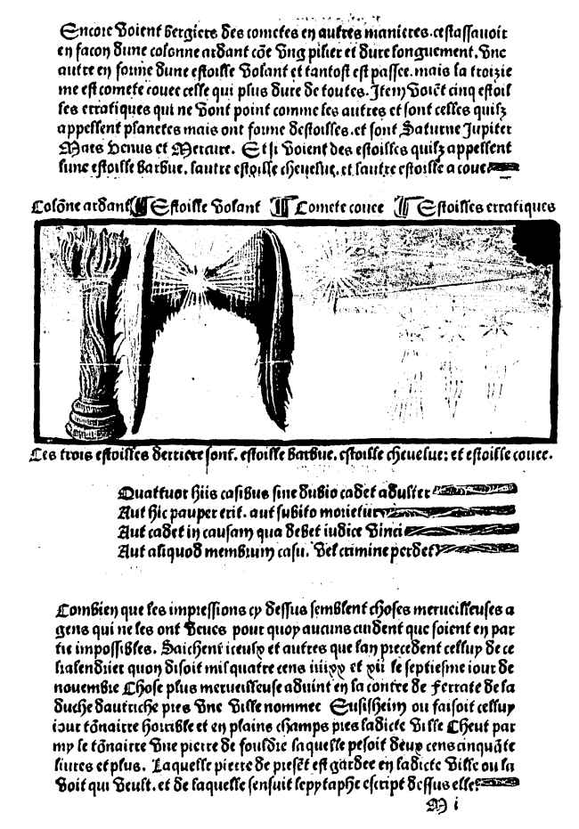

|  |
|  |
Les bergers qui couchent la nuit aux champs voient plusieurs impressions en l'air et sur terre que ceux qui couchent au lit ne voient pas : parfois dans les airs ils ont vu une sorte de comète à l'apparence d'un dragon crachant du feu de sa gorge. D'autres fois ils ont vu du feu saillant à la forme de chèvres sautantes sans durer longuement. Et d'autre fois une impression blanche apparaissant de tout temps la nuit et a toutes heures qu'ils appellent chemin Saint Jacques en galice.
Autres impressions sont comme feu flambant qui monte. L'autre comme feu flambant qui va de côté. L'autre comme feu stationnaire et reste ainsi longtemps. D'autres sont qui sont grands flambes et ne durent pas longtemps. Autres sont comme chandelles parfois grosses et parfois petites que l'on voit dans les airs et sur la terre. Une autre comète voict choir du ciel en forme d'une lance ardente.
Les bergers voient aussi des comètes en autres manières cest assavoir en facon d'une colonne ardente comme un pillier et dure longuement. Un autre en forme d'étoile volant et tantôt est passee, mais la 3ème est comète couee celle durant le plus longtemps. Item voit 5 étoiles erratiques n'allant point comme les autres et sont celles qu'ils appellent planètes mais ont faune d'étoiles, et sont Saturne, Jupiter, Mars, Venus et Mercure. Et si voient des étoiles qu'ils appellent lunen étoile barbue, l'autre étoile chevelue, et l'autre étoile a coue.
Combien que les impressions ci-dessus semblent choses merveilleuses à des gens qui ne les ont pas vues pour quoi aucuns cuident qu'elles soient en partie impossibles. Saichent iceulx et autres que l'an précédent celui de ce calendrier qu'on disait 1491 et 1942 le 7 novembre. Chose plus merveilleuse advint en la contrée de ferrate du duché d'Autriche près d'une ville nommée Eusisheim où faisait ce jour-là un tonnerre horrible et en plein champs près de ladite ville Cheut parmi le tonnerre une pierre de foudre pensant plus de 250 livres. Laquelle pierre est actuellement gardée dans la ville où on l'a vu, et de laquelle s'ensuit l'épitaphe écrit sur elle :